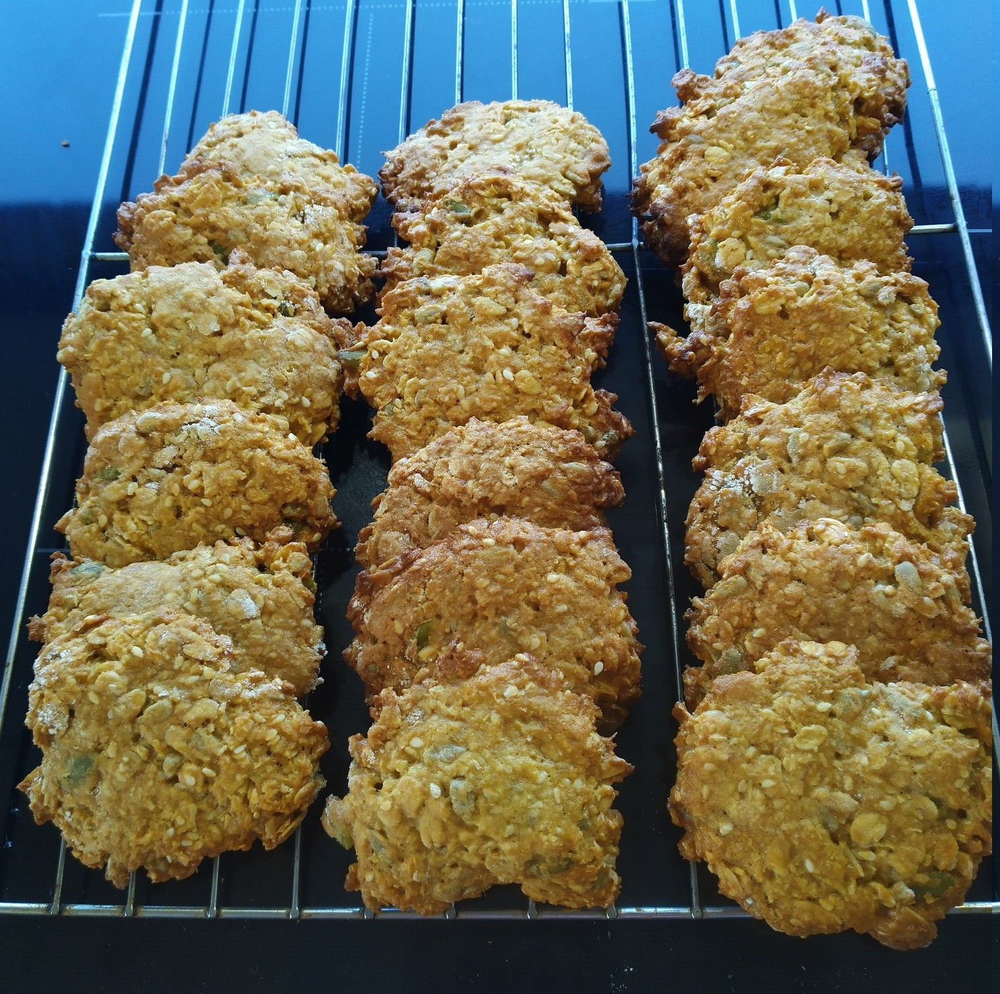

Oat and Seed Biscuits

Preheat oven to 180 degrees and grease 2 baking trays
100gmargarine100gbrown sugar2 tbspgolden syrup
In saucepan melt margarine, brown sugar and golden syrup
1/2 tspbicarb soda2 tbspwater
In bowl dissolve bicarb soda in hot water
Add sugar mixture to water and bicarb soda
125gplain flour50gcoconut100grolled oats25gpumpkin seeds25gsunflower seeds25gsesame seeds
Add plain flour, coconut, rolled oats, pumpkin seeds, sunflower seeds, sesame seeds to bowl and mix
Scoop mixture out with tbsp and place on trays
Flatten mixture with a floured spatula
Bake for 8-10 mins
Defrost biscuits on wire rack for 1 hour before eating. Biscuits and can be stored in airtight container for 1 week or frozen in sandwich bags for 3 months.